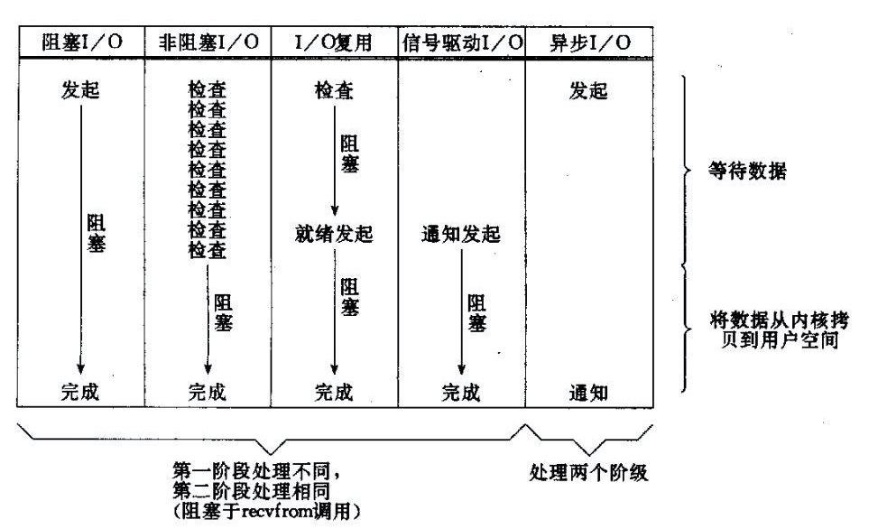

- 掌握InputStream、OutputStream、Reader、Writer的继承体系.
- 掌握字节流(FileInputStream、DataInputStream、BufferedInputStream、FileOutputSteam、DataOutputStream、BufferedOutputStream)和 字符流(BufferedReader、InputStreamReader、FileReader、BufferedWriter、OutputStreamWriter、PrintWriter、FileWriter), 并熟练运用.
- 掌握NIO实现原理及使用方法.
Java IO包括:
IO模式
IO模式可以分为:
- blocking IO 阻塞IO
- nonblocking IO 非阻塞IO
- IO multiplexing IO多路复用
- asynchronous IO 异步IO
所有的系统I/O都分为两个阶段：等待就绪和操作。举例来说，读函数分为等待系统可读和真正的读；同理，写函数分为等待网卡可以写和真正的写。
需要说明的是等待就绪的阻塞是不使用CPU的，是在“空等”；而真正的读写操作的阻塞是使用CPU的，真正在"干活"，而且这个过程非常快，属于memory copy，带宽通常在1GB/s级别以上，可以理解为基本不耗时。
对于一个network IO (这里我们以read举例), 它会涉及到两个系统对象, 一个是调用这个IO的process (or thread), 另一个就是系统内核(kernel). 当一个read操作发生时, 它会经历两个阶段：
- 等待数据准备 (Waiting for the data to be ready)
- 将数据从内核拷贝到进程中 (Copying the data from the kernel to the process)
这些IO Model的区别就是在两个阶段上各有不同的情况.
阻塞IO(blocking IO)
当用户进程调用了recvfrom这个系统调用, kernel就开始了IO的第一个阶段：准备数据. 对于network io来说, 很多时候数据在一开始还没有到达（比如, 还没有收到一个完整的UDP包）, 这个时候kernel就要等待足够的数据到来. 而在用户进程这边, 整个进程会被阻塞. 当kernel一直等到数据准备好了, 它就会将数据从kernel中拷贝到用户内存, 然后kernel返回结果, 用户进程才解除block的状态, 重新运行起来.
所以, blocking IO的特点就是在IO执行的两个阶段都被block了.
非阻塞IO(nonblocking IO)
当用户进程发出read操作时, 如果kernel中的数据还没有准备好, 那么它并不会block用户进程, 而是立刻返回一个error. 从用户进程角度讲 , 它发起一个read操作后, 并不需要等待, 而是马上就得到了一个结果. 用户进程判断结果是一个error时, 它就知道数据还没有准备好, 于是它可以再次发送read操作. 一旦kernel中的数据准备好了, 并且又再次收到了用户进程的system call, 那么它马上就将数据拷贝到了用户内存, 然后返回.
所以, 用户进程其实是需要不断的主动询问kernel数据好了没有.
IO多路复用(IO multiplexing)
IO multiplexing就是select/epoll, 也称为event driven IO. select/epoll 的好处就在于单个process就可以同时处理多个网络连接的IO. 它的基本原理就是select/epoll 这个function会不断的轮询所负责的所有socket, 当某个socket有数据到达了, 就通知用户进程. 当用户进程调用了select, 那么整个进程会被block, 而同时, kernel会“监视”所有select负责的socket, 当任何一个socket中的数据准备好了, select就会返回. 这个时候用户进程再调用read操作, 将数据从kernel拷贝到用户进程.
这个图和blocking IO的图其实并没有太大的不同, 事实上, 还更差一些. 因为这里需要使用两个system call (select 和 recvfrom), 而blocking IO只调用了一个system call (recvfrom). 但是, 用select的优势在于它可以同时处理多个connection. （多说一句. 所以, 如果处理的连接数不是很高的话, 使用select/epoll的web server不一定比使用multi-threading + blocking IO的web server性能更好, 可能延迟还更大. select/epoll的优势并不是对于单个连接能处理得更快, 而是在于能处理更多的连接. ）
在IO multiplexing Model中, 实际中, 对于每一个socket, 一般都设置成为non-blocking, 但是, 如上图所示, 整个用户的process其实是一直被block的. 只不过process是被select这个函数block, 而不是被socket IO给block.
异步IO(asynchronous IO)
用户进程发起read操作之后, 立刻就可以开始去做其它的事. 而另一方面, 从kernel的角度, 当它收到一个asynchronous read之后, 首先它会立刻返回, 所以不会对用户进程产生任何block. 然后, kernel会等待数据准备完成, 然后将数据拷贝到用户内存, 当这一切都完成之后, kernel会给用户进程发送一个signal, 告诉它read操作完成了.
四种模式比较

在Java中，以socket.read()为例子：
- 传统的BIO里面socket.read()，如果TCP RecvBuffer里没有数据，函数会一直阻塞，直到收到数据，返回读到的数据。
- 对于NIO，如果TCP RecvBuffer有数据，就把数据从网卡读到内存，并且返回给用户；反之则直接返回0，永远不会阻塞。
- 最新的AIO(Async I/O)里面会更进一步：不但等待就绪是非阻塞的，就连数据从网卡到内存的过程也是异步的。
换句话说， BIO里用户最关心“我要读”，NIO里用户最关心"我可以读了"，在AIO模型里用户更需要关注的是“读完了”。 NIO一个重要的特点是：socket主要的读、写、注册和接收函数，在等待就绪阶段都是非阻塞的，真正的I/O操作是同步阻塞的（消耗CPU但性能非常高）。
blocking vs non-blocking
调用blocking IO会一直block住对应的进程直到操作完成, 而non-blocking IO 在kernel还准备数据的情况下会立刻返回.
synchronous IO vs asynchronous IO
Stevens给出的定义（其实是POSIX的定义）是这样子的：
- A synchronous I/O operation causes the requesting process to be blocked until that I/O operation completes;
- An asynchronous I/O operation does not cause the requesting process to be blocked;
synchronous IO做”IO operation”的时候会将process阻塞. 按照这个定义, 之前所述的blocking IO, non-blocking IO, IO multiplexing都属于synchronous IO. 有人可能会说, non-blocking IO并没有被block啊. 这里有个非常“狡猾”的地方, 定义中所指的”IO operation”是指真实的IO操作, 就是例子中的recvfrom这个system call. non-blocking IO在执行recvfrom这个system call的时候, 如果kernel的数据没有准备好, 这时候不会block进程. 但是, 当kernel中数据准备好的时候, recvfrom会将数据从kernel拷贝到用户内存中, 这个时候进程是被block了, 在这段时间内, 进程是被block的. 而asynchronous IO则不一样, 当进程发起IO 操作之后, 就直接返回再也不理睬了, 直到kernel发送一个信号, 告诉进程说IO完成. 在这整个过程中, 进程完全没有被block.
non-blocking IO vs asynchronous IO
在non-blocking IO中, 虽然进程大部分时间都不会被block, 但是它仍然要求进程去主动的check, 并且当数据准备完成以后, 也需要进程主动的再次调用recvfrom来将数据拷贝到用户内存. 而asynchronous IO则完全不同. 它就像是用户进程将整个IO操作交给了他人（kernel）完成, 然后他人做完后发信号通知. 在此期间, 用户进程不需要去检查IO操作的状态, 也不需要主动的去拷贝数据.
最后, 再举几个不是很恰当的例子来说明这四个IO Model 有A, B, C, D四个人在钓鱼： A用的是最老式的鱼竿, 所以呢, 得一直守着, 等到鱼上钩了再拉杆; B的鱼竿有个功能, 能够显示是否有鱼上钩, 所以呢, B就和旁边的MM聊天, 隔会再看看有没有鱼上钩, 有的话就迅速拉杆; C用的鱼竿和B差不多, 但他想了一个好办法, 就是同时放好几根鱼竿, 然后守在旁边, 一旦有显示说鱼上钩了, 它就将对应的鱼竿拉起来; D是个有钱人, 干脆雇了一个人帮他钓鱼, 一旦那个人把鱼钓上来了, 就给D发个短信.
IO设计模式
FIXME reactor和proactor模式详细
Reactor
Doug Lea《scalable IO in Java》 中文解读 another
首先来看看Reactor模式, Reactor模式应用于同步I/O的场景. 我们以读操作为例来看看Reactor中的具体步骤： 读取操作：
- 应用程序注册读就绪事件和相关联的事件处理器
- 事件分离器等待事件的发生
- 当发生读就绪事件的时候, 事件分离器调用第一步注册的事件处理器
- 事件处理器首先执行实际的读取操作, 然后根据读取到的内容进行进一步的处理
Proactor
读取操作：
- 应用程序初始化一个异步读取操作, 然后注册相应的事件处理器, 此时事件处理器不关注读取就绪事件, 而是关注读取完成事件, 这是区别于Reactor的关键.
- 事件分离器等待读取操作完成事件
- 在事件分离器等待读取操作完成的时候, 操作系统调用内核线程完成读取操作, 并将读取的内容放入用户传递过来的缓存区中. 这也是区别于Reactor的一点, Proactor中, 应用程序需要传递缓存区.
- 事件分离器捕获到读取完成事件后, 激活应用程序注册的事件处理器, 事件处理器直接从缓存区读取数据, 而不需要进行实际的读取操作.
Proactor中写入操作和读取操作, 只不过感兴趣的事件是写入完成事件.
从上面可以看出, Reactor和Proactor模式的主要区别就是真正的读取和写入操作是有谁来完成的, Reactor中需要应用程序自己读取或者写入数据, 而Proactor模式中, 应用程序不需要进行实际的读写过程, 它只需要从缓存区读取或者写入即可, 操作系统会读取缓存区或者写入缓存区到真正的IO设备
IO设计模式比较
主动和被动
Reactor被动的等待指示事件的到来并做出反应;它有一个等待的过程, 做什么都要先放到监听事件集 合中等待handler可用时再进行操作;Proactor直接调用异步读写操作, 调用完后立刻返回; 实现 Reactor实现了一个被动的事件分离和分发模型, 服务等待请求事件的到来, 再通过不受间断的同步处 理事件, 从而做出反应; Proactor实现了一个主动的事件分离和分发模型;这种设计允许多个任务并发的执行, 从而提高吞吐 量;并可执行耗时长的任务（各个任务间互不影响）
优点
Reactor实现相对简单, 对于耗时短的处理场景处理高效; 操作系统可以在多个事件源上等待, 并且避免了多线程编程相关的性能开销和编程复杂性; 事件的串行化对应用是透明的, 可以顺序的同步执行而不需要加锁; 事务分离：将与应用无关的多路分解和分配机制和与应用相关的回调函数分离开来, Proactor性能更高, 能够处理耗时长的并发场景;
缺点
Reactor处理耗时长的操作会造成事件分发的阻塞, 影响到后续事件的处理; Proactor实现逻辑复杂;依赖操作系统对异步的支持, 目前实现了纯异步操作的操作系统少, 实现优秀 的如windows IOCP, 但由于其windows系统用于服务器的局限性, 目前应用范围较小;而Unix/Linux 系统对纯异步的支持有限, 应用事件驱动的主流还是通过select/epoll来实现;
使用场景
BIO方式适用于连接数目比较小且固定的架构, 这种方式对服务器资源要求比较高, 并发局限于应用中, JDK1.4以前的唯一选择, 但程序直观简单易理解.
NIO方式适用于连接数目多且连接比较短（轻操作）的架构, 比如聊天服务器, 并发局限于应用中, 编程比较复杂, JDK1.4开始支持.
AIO方式使用于连接数目多且连接比较长（重操作）的架构, 比如相册服务器, 充分调用OS参与并发操作, 编程比较复杂, JDK7开始支持.
[参考文献]:
- Think in Java